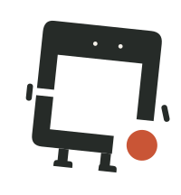
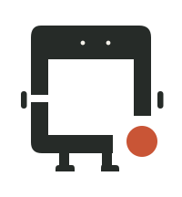
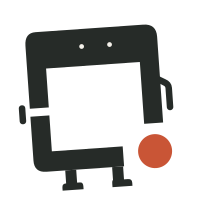
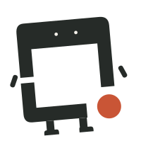
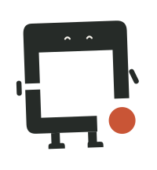

See看得清
Finds the target on a screenshot (visual grounding).在截图上找到要操作的目标（视觉定位）。
Open source · Local · macOS开源 · 本地 · macOS
Small open models that see your screen, decide the next step and act on your own Mac. Your screen stays on your machine. 一组开源小模型：看清你的屏幕，想好下一步，在你自己的 Mac 上动手。屏幕内容默认不出本机。
Each step is a typed question answered with probabilities, so a low-confidence step asks, escalates or waits instead of guessing. 每一步都是一个带选项的问题，回答是概率；没把握时就去问、升级或等待，而不是猜。
POST /v1/systemone · question: operation
Goal (sandbox Finder task): “Create a folder named docs and move the .txt files into it. Leave the other files and keep alone.” 目标（沙箱访达任务）：「请新建一个名为 docs 的文件夹，把 .txt 文件都移进去。其他文件和 keep 目录不要动。」
examples/request.json in the brain repo: the model clicks “新建文件夹” (New Folder) first. Release G18b: the 0.8B was at 0.956, below the 0.96 threshold, so the 4B answered. Probabilities are read from answer logits; nothing is generated.
brain 仓库 examples/request.json 里的这一步：模型先点「新建文件夹」。发布版 G18b：0.8B 的把握为 0.956，低于门槛 0.96，所以由 4B 作答。概率直接读自答案 logits，不生成文本。
Demo演示

The launch video goes here: every step with its time and confidence on screen.发布视频放在这里：每一步的耗时和把握都显示在画面上。
How it works组成
得心 comes from the idiom 得心应手: what the mind decides, the hand carries out.「得心」取自得心应手：心里想定的，手上就能做到。
See看得清
Finds the target on a screenshot (visual grounding).在截图上找到要操作的目标（视觉定位）。

Think想明白
Decides the next step, with a probability for every option. A 0.8B model answers; unsure or risky steps go to the 4B. Runs with MLX.决定下一步，每个选项都给出概率。0.8B 先答，没把握或有风险的步骤交给 4B。基于 MLX 运行。
Act稳稳做
Drives the real macOS desktop, and collects and labels trajectories for training.驱动真实的 macOS 桌面，并采集、标注训练用的操作轨迹。
Measure测清楚
Sandbox desktop tasks and graders, with reference runs, so every number here can be reproduced.沙箱桌面任务和评分器，附参考运行记录，这里的每个数字都能复现。
Results · October 2026, release G18b成绩 · 2026 年 10 月，发布版 G18b
bench suite v25: 13 sandbox tasks × 3 runs on macOS through the DeskMind app, strict pass. 39 runs scored, no environment errors.bench v25：在 macOS 上通过 DeskMind app 运行，13 个沙箱任务各跑 3 次，严格判定通过。计分 39 次，没有环境故障。
| config配置 | strict pass严格通过 | false “done”没做完就说完成 | decision time p50每次决策耗时中位数 |
|---|---|---|---|
| DeskMind router G18b (0.8B → 4B, 8-bit, threshold 0.96, M4 Pro)DeskMind 路由 G18b（0.8B → 4B，8-bit，门槛 0.96，M4 Pro） | 39/39 | 0 | 0.48 s (0.8B) · 3.6 s (4B check)0.48 秒（0.8B）· 3.6 秒（4B 复核） |
On the 231 public JevBench v1.4.2 items (the board's public_accuracy), the G18b Brain 4B scores 0.835 (the earlier G14 scored 0.866). The board's headline score also weighs sealed items, calibration, speed and cost; we have not been scored on the sealed set yet.在 JevBench v1.4.2 的 231 道公开题上（即榜单的 public_accuracy），G18b 的 Brain 4B 得 0.835（上一版 G14 为 0.866）。榜单主分还计入密封题、校准、速度和成本，我们还没有密封题成绩。
Get started上手
uv.需要 Apple Silicon Mac、Python 3.12 和 uv。POST /v1/systemone takes {state, questions} and returns {answers}, the same shape as System One–style decision APIs, so an existing client only changes its base URL.POST /v1/systemone 接收 {state, questions}，返回 {answers}，和 System One 类决策接口同一格式，已有客户端只需改 base URL。git clone https://github.com/deskmind-ai/brain && cd brain
uv sync --extra mlx
uv run hf download deskmind/brain-4b --revision g18b-q8 --local-dir models/brain-4b
uv run hf download deskmind/brain-0.8b --revision g18b-q8 --local-dir models/brain-0.8b
uv run deskmind-brain-serve --predictor mlx:models/brain-0.8b \
--escalate-to mlx:models/brain-4b --two-stage --port 8793
curl -s localhost:8793/v1/systemone -H 'Content-Type: application/json' \
-d @examples/request.jsonCommunity社区
A task and its grader in bench is the lowest barrier and the highest value.在 bench 里加一个任务和评分器，门槛最低、价值最高。
Questions, results and ideas go in GitHub Discussions.问题、成绩和想法都可以发到 GitHub Discussions。
Privately, through the repository's Security tab, or by email:请私下报告：在仓库的 Security 页提交，或发邮件到： security@deskmind.dev




Xiaofang (小方): the frame from our logo, come to life.小方：logo 里的那个框，活了过来。